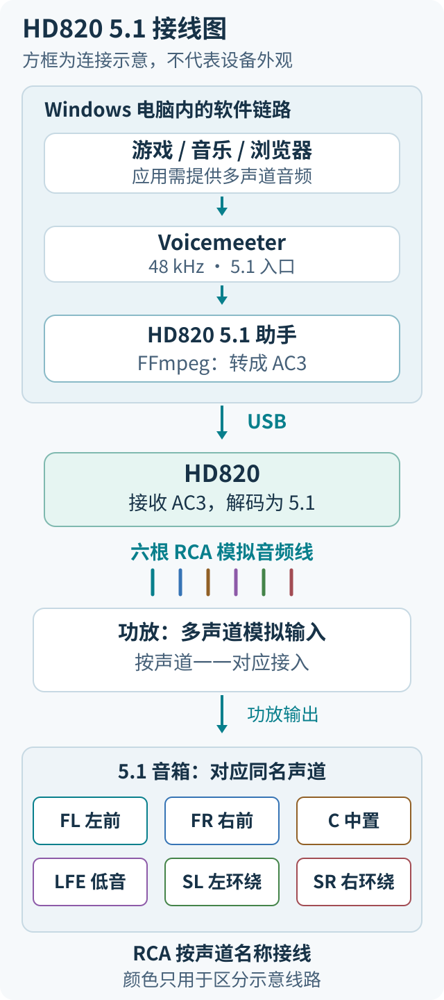
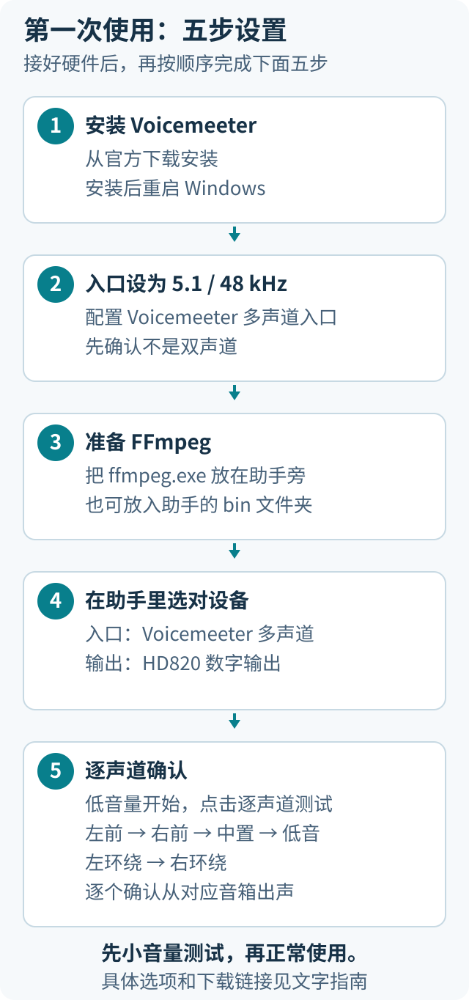
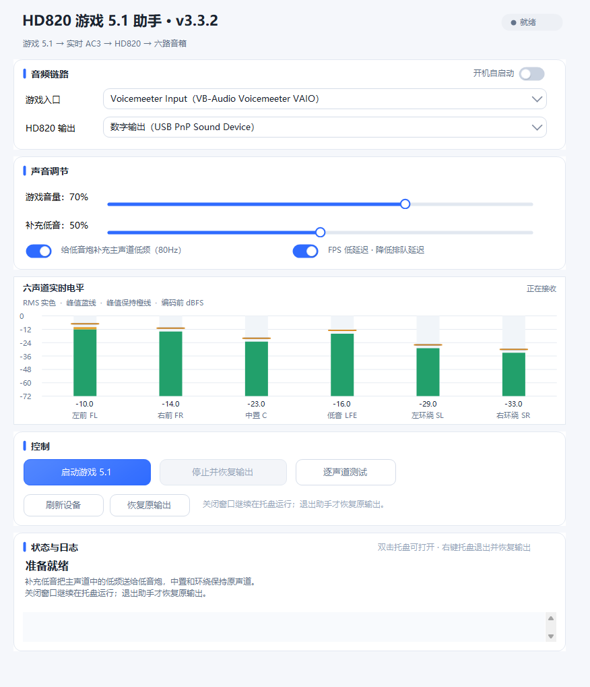
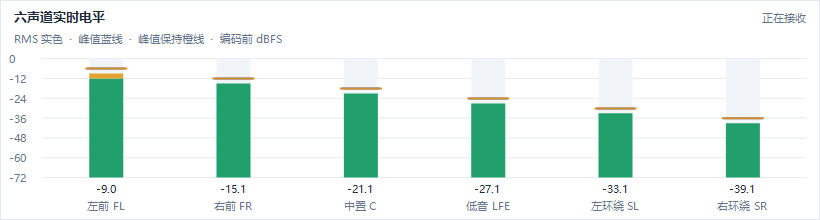

HD820 5.1 助手
把 Windows 游戏、音乐和视频中的多声道声音送到 HD820，再通过六根 RCA 线连接功放和 5.1 音箱。提供六声道实时电平、低音补充、FPS 模式、登录自启和托盘后台运行。
Windows 10 / 11 x64 · v3.3.2 · MIT
下载程序包 · 下载页与更新说明 · 遇到问题
第一次使用，按下面顺序做。程序包已经编译好，不需要 Python、Visual Studio 或自己编译。下载名字带 windows-x64.zip 的文件；下载页自动生成的 Source code 是源码，不是可直接运行的程序。
先确认你有这些东西
这是电脑上的音频助手，不替换厂商内核驱动，也不刷硬件固件。普通立体声仍只有原来的声道，本程序不会自动创造独立环绕，也不提供 Atmos 对象或天空声道。
1. 接好线，选对硬件输入

HD820 按对应型号手册切到 USB-PC 电脑输入和 5.1 输出；USB-PC 与播放U盘的USB模式可能不同。功放选多声道模拟输入，例如 EXT. IN、MULTI CH IN 或 6CH IN。接线时先调低功放音量。
两端同名接口一一对应，不要只看插头颜色：
本项目使用后两路连接一对环绕音箱；具体标签可能随解码器、功放而不同。
2. 下载需要的软件
Voicemeeter、FFmpeg和厂商驱动分别下载，不随本程序包分发。Voicemeeter按厂商的donationware条款使用，各依赖的许可见第三方说明。

3. 安装 Voicemeeter，然后重启电脑
- 解压官方安装包，运行里面的安装程序，需要管理员权限时由你确认。
- 按提示安装。安装完成后重启电脑。
- 重启后继续下一步，先不用调整复杂的混音功能。
本助手直接使用虚拟播放端点，不要求打开Voicemeeter混音器，也不需要配置A1。把HD820数字输出留给本助手独占；若你另有Voicemeeter混音用途，不要让它同时占用这个输出。不同驱动版本仍需通过后面的逐声道测试确认。
完成的标志：Windows的播放设备里出现 Voicemeeter Input (VB-Audio Voicemeeter VAIO)。注意是 Input，不要选录音设备中的 Voicemeeter Output。
4. 把虚拟入口设为 5.1、48000 Hz
这里配置的是 Voicemeeter Input，不是HD820数字输出。
- 按
Win + R，输入 mmsys.cpl，回车，打开“声音”窗口。
- 进入“播放”，单击
Voicemeeter Input (VB-Audio Voicemeeter VAIO)。
- 点左下角“配置”，选 5.1 环绕声。确认中置、低音和一对环绕存在，完成向导。
- 选中同一个设备 →“属性”→“高级”。默认格式的采样率选 48000 Hz，位深可保留原值，点“应用”。
- 如果该设备开启了Windows空间音效，先改为“关闭”，按普通5.1扬声器配置使用。
完成的标志：重新打开“配置”仍是5.1，“高级”仍是48000Hz。只有立体声、没有5.1时，先确认设备选对并完成安装后的重启。
先保留原来的扬声器/耳机作为Windows默认输出，不要手动把Voicemeeter Input设为默认。
助手启动后会负责切换，停止时还原。如果安装Voicemeeter已自动改了默认输出，先选回你平常使用的扬声器/耳机，再启动助手。
本项目也接受部分常规7.1布局并合并成5.1，但首次配置建议用5.1。不能使用44100Hz、96000Hz或任意六声道布局。
5. 把 ffmpeg.exe 放到助手旁边
- 将本助手ZIP全部解压，不要在压缩包里直接运行EXE。
- 解压FFmpeg ZIP，进入里面的
bin 文件夹。
- 复制
ffmpeg.exe 到助手EXE所在文件夹。ffplay.exe和ffprobe.exe不能代替它。
最后至少应看到下面这些文件：
D:\HD820助手\
├─ HD820游戏5.1助手.exe
├─ ffmpeg.exe ← 从FFmpeg的bin文件夹复制过来
├─ silence-ac3-640k.spdif ← 程序包自带，请保留
├─ 开始使用.html ← 双击查看本教程
├─ LICENSE
└─ docs\assets\ ← 教程配图
这种放法不需要配置PATH环境变量。如果使用过 ffmpeg-path.txt，它里面的路径优先；旧路径失效时要更新该文件，旁边放新的ffmpeg.exe不能覆盖旧配置。
6. 打开助手，选两个设备
双击 HD820游戏5.1助手.exe，先暂停游戏或音乐，把功放音量调低。

界面示意由v3.3.2实际控件渲染，设备项及电平是演示数据，没有播放测试音。图中音量与开关不是你的必选值。
不要把“HD820输出”选成普通扬声器、显示器或耳机端点。
助手发送的是AC3编码载体，需要兼容解码器处理。多个USB音频设备名称相似时，要先核实对应硬件，程序不会替你猜选。
设备没出现时，检查USB、驱动和第4步，再点“刷新设备”。运行时设备选择会锁定，需先“停止并恢复输出”。
7. 先听六个声道，再打开游戏
-
保持功放低音量。助手正在运行时，先点“停止并恢复输出”。
-
点“逐声道测试”。约 18秒，每路约3秒，顺序为：
左前 → 右前 → 中置 → 低音 → 左环绕 → 右环绕
-
确认轮到哪个声道，就由对应音箱发声。低音测试声较低沉，不要按人声大小判断；测试会自动停止。
-
测试正确后点“启动游戏5.1”。底部应显示“游戏5.1正在运行”，以及 6声道 / 48000Hz。
-
再打开或重启游戏/播放器。应用输出选“默认设备”或 Voicemeeter Input；游戏有音频模式时选“5.1/环绕/家庭影院”。
助手启动时会将默认播放入口切到Voicemeeter，已打开的应用可能继续使用旧设备，所以要重新打开。应用如果自己指定了其他输出，也需改它自己的设置。

合成测试信号示意。绿色柱是RMS电平，线条显示峰值；反映编码前的数字音频，不是音箱实测响度。
环绕柱变化表示入口里有该声道数据，硬件端仍要听对应音箱确认。正常内容不会让六个声道始终一样响，中置或低音可能暂时没有信号。
日常怎么用
- 调通后打开“开机自启动”：当前用户登录后后台启动并尝试连接设备；未登录时不会播放。
- 点窗口右上角 × 会收起到托盘，5.1继续工作。双击托盘图标或再次双击助手EXE可以重新打开。程序不会自动创建桌面快捷方式，你可以自行创建。
- 真正退出：右键托盘图标 →“退出并恢复输出”。暂时停用则点“停止并恢复输出”。
- 自启开启后不要直接移动程序目录。换位置前先关闭自启并退出，移动后重新打开和启用自启。
- 最小化保留任务栏，关闭窗口退托盘，两者不同。
遇到问题先查这里
支持到什么程度
已验证HD820 → 六路模拟RCA → 天龙AVR-1507 → 5.1音箱这条链路；v3.3.2通过13组离线回归及六路编解码检查。其他设备、固件和应用需要分别验证。
输出为普通 5.1 AC3，640kbps，有损编码。AC3每帧在48kHz下为32ms，采集、排队、USB和硬件解码还会增加延迟。FPS模式不等于零延迟；本项目没有承诺消除所有卡顿，也没有完成端到端延迟测量。
音乐和浏览器能否使用，取决于应用是否提供多声道PCM、内容和账号权限。本助手不提供杜比授权、不绕过服务限制。macOS、PS5暂无可用移植版。
给想自己编译的人
普通使用者可以跳过本节。源码解压后，在项目目录的Windows PowerShell中运行：
powershell.exe -NoProfile -ExecutionPolicy Bypass -File .\build.ps1
输出在dist，自行按前面的步骤放入FFmpeg。使用系统.NET Framework C#编译器，构建不会安装驱动、改默认音频设备或启用自启。
离线回归需要Python和测试依赖：
python -m pip install -r .\tests\requirements.txt
python .\tests\run_tests.py --ffmpeg C:\tools\ffmpeg\bin\ffmpeg.exe
测试不打开物理音频输出。命令行参数见开发者说明，另有架构说明、调试记录和验证摘要。
开源协议
MIT License，Copyright (c) 2026 MoriAss。允许使用、修改、分发和商用，须保留版权声明与许可文本。第三方依赖仍遵守各自的许可证或厂商条款。